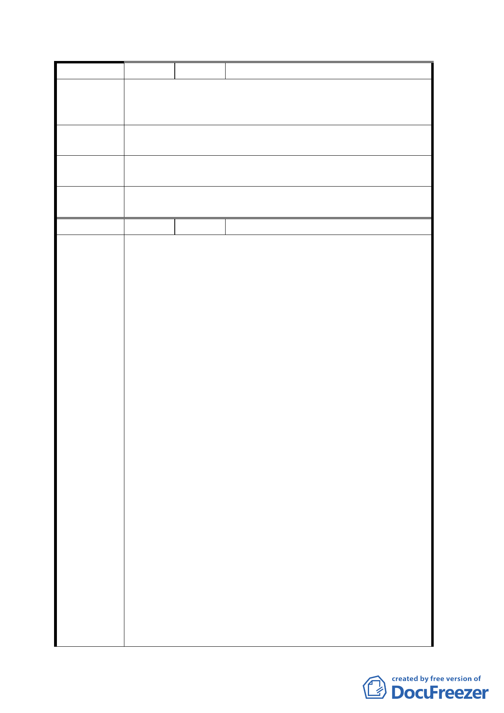

編 號 ３ 陳情人 李明賢（交一）
此地段家族乃使用百年以上，為全家族老家精神所在，它
陳 情 理 由 已經多次徵收，退居到目前所剰，絕不能再被徵收，致祖
先遺留下來的土地蕩然無存。
建議辦法
建議將此通風口移至對面農會或其他公地，不要用到私人
土地，讓少數百姓權益受損。
專案小組審
查結論
同編號１。
委員會決議
本案原公展所擬變更第三種商業區土地為交通用地乙案，
依專案小組審查結論不予變更。
編 號 ４ 陳情人 台北市松山區農會（交一）
一、 本會雖名為「台北市松山區農會」但實際係為服務松
山、信義、萬華及中正等四區農民所組成之農會，本
會賴以為生之松山區寶清段七小段 691、692、693 等
地號土地上之建物前段一樓店面係行政院農業委員
會專案補助及臺北市政府建設局輔導為協助全國各
地區農民推廣優良農、特產品設置之「農特產品展售
中心」，後段三層除為行政院農業委員會於本市僅存
三個公糧糧倉之一外，且為本市上述四區農民、市民
大眾及機關團體所需肥料、農業、生產資材之儲存、
供應倉庫。二樓為大型會議室兼推廣教室除開會使用
外，平日均為本會農事班、家政班、四健會及留公產
銷基金會等之上課教室。為本會維持正常運作及龐大
農業推廣經費等之所繫且係本市四區農民、市民大
陳情理由
眾、機關團體於農業所需資材等之唯一服務據點。倘
遭徵收無異是將所屬本會的四區農民均予消滅，勢將
引起本會四仟多位會員、三佰多位家政班員、眾多四
健會員及市民大眾之強烈抗爭。今經本會全體理監事
開會一致反對該設施設置於本會土地上。
二、 右列土地中之 691 地號文昌公神明會土地係本會於
日據時期出資代該會補償地上物所有人及其使用人
而取得該地之永久使用權及建造地上合法建物並經
合法登記，迄今該筆土地每年地價稅均由本會代為繳
納。該會會員之後代在不知情之情況下不能謂本會係
佔用該筆土地，系爭土地業經本會理事會之一致同意
由本會循司法途徑處理中。在本會未獲判決確定前，
祈請協助要求捷運局暫不得對本會土地予以徵收，以
免損害本市農民及市民大眾之權益。
三八